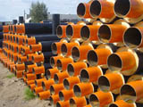
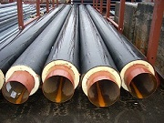

ООО «Гомельский завод теплоизолированных труб» создан для активного участия в процессе внедрения энергосберегающих технологий, производства и поставки оборудования и материалов, снижающих энергозатраты. Основным направлением применения ресурсосберегающих технологий, избранным нашим предприятием, является снижение теплопотерь при внедрении в практику строительства тепловых сетей с использованием предварительно изолированных (ПИ) труб с пенополиуретановой (ППУ) изоляцией. Отрицательным фактором, влияющим на принятие решения о применении ПИ-труб с ППУ изоляцией, изоляцией является значительная дороговизна первоначального вложения при закупке материалов и комплектующих. Однако, как показала практика, данный метод имеет огромное экономическое преимущество перед минераловатной изоляцией (основным методом до недавнего времени, используемым при строительстве теплосетей). Применение ПИ-труб с ППУ изоляцией позволит до 30% снизить теплопотери, продлить службу трубопровода до 25-230 лет, значительно (в несколько раз) снизить затраты на техническое обслуживание.
Эффективность применения вышеизложенной технологии повлияла на принятие Постановления Совета Министров Республики Беларусь № 1820 от 27.12.200 г. О строительстве, реконструкции и капитальном ремонте тепловых сетей и систем теплоснабжения с применением только предварительно изолированных труб. Деятельность ООО «Гомельский завод теплоизолированных труб» в сфере энергосберегающих технологий направлена не только на производство и поставку оборудования и материалов. Мы выполняем весь комплекс работ, начиная с проектирования и заканчивая сдачей теплотрасс под ключ.